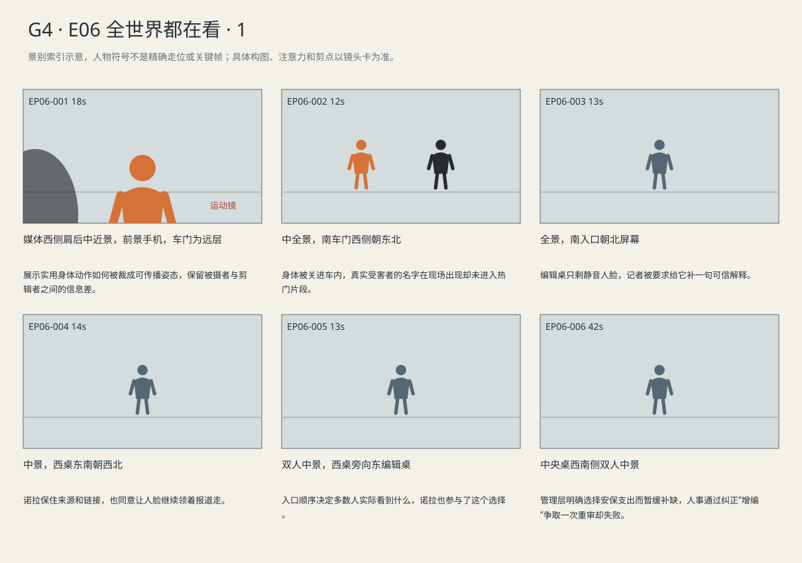
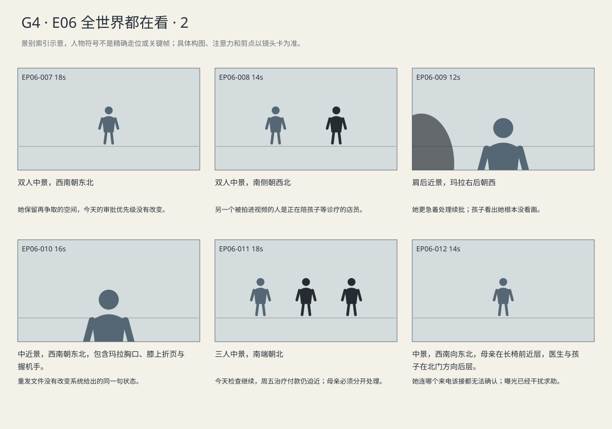
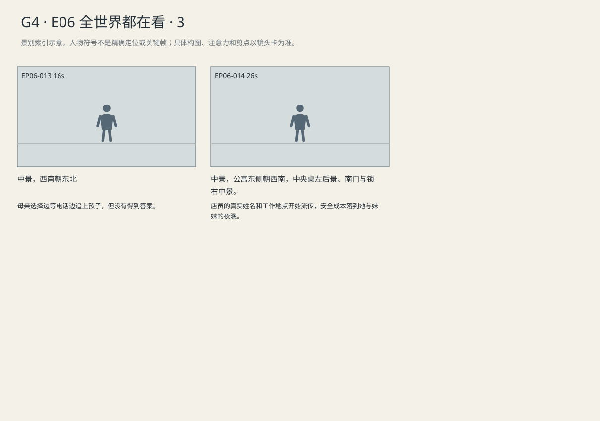

链条与踏板被裁掉，程序声明输给人脸首图；公司优先增加安保，母亲仍等不到付款答案。
剧本Markdown · 全部独立复制稿 · 英语字幕 · 中文字幕
详细剧本
E06-SC01 · 日·与E01同一次押送 · DOCK
纽约河岸的同一次押送，接冷开路易吉右脚尚未迈上南侧车踏板的时刻。北侧旋翼仍转，西栏杆外媒体挤在一起，东侧警员缓冲区未变。路易吉橙色囚服、前铐连腰链；此处转到媒体一侧，已经看过的三句现场交谈不再重放。
西栏杆外记者将手机越过别人肩头，只够取到青年胸口以上。为了避开一截警员帽檐，他举高半寸。现场青年仍在车旁调整脚步，手机里却回放刚才抬眼那一帧。记者暂停、放大，画面裁掉腰链与脚下踏板。
深色大衣官员在青年后方找空位，刚站进去又被另一部手机遮住。记者不重录那三句近处交谈，继续用无声画面挑封面。现场旋翼和快门从未停过。
现场记者（英语）：What about Brian Ward? Luigi! Answer that!
中文对照：布莱恩·沃德呢？路易吉！回答这个！
路易吉抬右脚上踏板，把双手收住，另一脚跟上。甲留门边，乙等他坐进车内才退开。他没有转身应答。南侧车门拉合，西边喊声立刻转去追刚才录到画面的人。
E06-SC02 · 日·稍后 · NEWSROOM
编辑室入口在南，西窗照着诺拉的工作桌，编辑桌在东，北墙屏幕同时开着几路公开直播。诺拉穿灰蓝大衣，红笔记本在西桌左侧，黑手机在右。编辑托马斯穿灰衬衫坐东桌，两人隔着中间过道讲话。
托马斯把抬眼的一帧放到工作区，预览自动静音。诺拉把手机放西桌右侧，在电脑打开海伦声明。托马斯带着自己的预览走到她东侧，两人看同一稿件。
编辑托马斯（英语）：Everyone's using that shot. What can we actually stand behind?
中文对照：都在用那张画面。咱们有什么是能负责的？
她抬手示意先别点发布，编辑没松鼠标，只让出一条标题栏。
诺拉把声明第一段贴进稿件，托马斯皱眉拖到结尾。
诺拉（英语）：She's saying the transfer isn't a verdict. That's the lawyer talking, not him.
中文对照：律师说了，转押不等于定罪。这是她说的，可不是他的解释。
编辑托马斯（英语）：Fine. Use that.
中文对照：行，就用这句。
诺拉挡住他要删去来源的一行，把完整链接留在下面，另把最短一句拖进标题。她这次没有阻止人脸占据首图。
托马斯按下发布，先盯视频播放数。诺拉另开声明链接统计，数字几乎不动。
编辑托马斯（英语）：The link's right there. If they want to read it, they can.
中文对照：链接就在那儿。想看的人点进去就行。
编辑已经转向下一条。她把完整声明存入自己的采访资料，重新点开视频，把被静音的现场声开回来；旋翼声盖住办公室两秒。
E06-SC03 · 下午·同日 · INSURER
合众健康会议室南门合着，玻璃走廊在东，西窗冷光落在中央桌，北屏幕等待投屏。维克多穿海军蓝西装坐北侧，银灰领带平整，平板在面前。人事经理黛安穿深蓝外套坐东侧，面前是安保报价与待批招聘单。
黛安把安保报价放左、招聘单放右，两张一起推过去。
人事经理黛安（英语）：We've got three events, plus escorts this weekend. Security wants a deposit today.
中文对照：咱们有三场活动，周末还得安排护送。安保今天就要预付款。
维克多先拖来安保单，在平板批准付款申请，款项尚待执行。他将招聘单压到安保单下面。
维克多（英语）：Pay them. The review hires can wait.
中文对照：钱先付。复核那边招人再等等。
黛安没有收纸，指尖仍在岗位数那一角。
人事经理黛安（英语）：We're behind already. Who's supposed to get through these?
中文对照：都积压成这样了。这些活儿让谁干？
人事经理黛安（英语）：These aren't new positions. I'm replacing people who left.
中文对照：这不是增编。我是在补离职的人。
维克多（英语）：Not today.
中文对照：今天不批。
她等他松手，自己把招聘单慢慢抽出来，安保单留在桌上。
维克多看她收回招聘单，终于抬眼。
维克多（英语）：Bring me the oldest cases on Monday.
中文对照：周一把积压最久的案子给我。
黛安把折到背面的岗位页重新翻到文件夹最前面。
人事经理黛安（英语）：I'll bring the vacancy list, too.
中文对照：空缺岗位那张表我也一块儿带来。
她合好文件夹，拿着招聘单离桌；安保那张留给维克多，平板仍亮着待执行付款。
E01-SC02 · 下午·押送当天·宾州·安保会议之后 · CLINIC
宾州治疗中心，南入口连着北端治疗门，西窗下是长椅，东边接待台正打印东西。玛拉灰风衣罩黑工服，坐西椅靠过道的一端；艾莉抱画本挨着她，文件夹和手机占着母亲两只手。
艾莉把一只四条腿的鸟推到妈妈眼前。
艾莉（英语）：When its wings get tired, it can run. Look at the feet.
中文对照：翅膀累了，它就能跑。你看它的脚。
玛拉还没看，手机震动，屏幕里的自己站在快餐店柜台后。她立刻把屏幕贴向大腿。艾莉把画往回拉一半，留着两只脚等她看。
玛拉把手机转回自己，偷拍视频被保险账户通知压住。她用拇指划掉照片，打开拒赔页。艾莉还在等。
玛拉（英语）：I did. Four feet. Just let me deal with this.
中文对照：看了，四只脚。先让我弄完这个。
她先把蓝夹放到膝上，腾出左手碰画纸，却只摸到空出的页角。
等待音刚断，玛拉就把折起的拒赔页展开。
玛拉（英语）：No, the renewal. The clinic sent everything again.
中文对照：不是，我问的是续批。诊所都重新发过了。
她用左指沿一行找日期，客服电话没有顺着她问的事答。
客服电话声（英语）：It's still showing 'documentation incomplete.'
中文对照：这里还是显示“材料不完整”。
她按住纸的力气重了，纸角折回去。
医生从北门出来，朝母女示意。艾莉先站起，把绿笔插进画本。玛拉用肩夹住手机，左手把蓝夹夹回左臂，站起来想跟上。
玛拉（英语）：Can you keep Friday open? Until they call me back?
中文对照：周五能先给我们留着吗？等他们回我电话。
医生（英语）：I can see her today. But billing needs a payment plan for Friday. Come in when you're done.
中文对照：今天我能看她。但周五怎么付款，账务那边得先说好。忙完就进来。
医生指向治疗门，仍等艾莉决定。艾莉把本子夹牢，走到医生身边。
听筒里响起转接提示前的轻响。
客服电话声（英语）：Someone from review will call the number we have on file.
中文对照：复核那边会打您留下的号码。
玛拉（英语）：What number will they call from? Wait, I'm getting all these—
中文对照：他们用什么号码打？等等，我这儿一直有人——
玛拉把手机从耳边移开，看见陌生信息盖住来电页面，又把它贴紧。艾莉回头一次；母亲只来得及举一下左肘示意她先去。
艾莉在北门前停住，冲医生举起画本，先指明四条腿。玛拉往前追了一步，电话再次接通，她停在走廊中间。
玛拉（英语）：Did anyone even open it? Can you just tell me that?
中文对照：到底有没有人打开过？就告诉我这个，行吗？
对方没有回答。她把文件夹抱紧，朝北门走；孩子已把画摊给医生，暂时没有看她。
E06-SC04 · 夜·同日 · MARA-HOME
玛拉公寓西窗已黑，东厨房只亮小灯，中央桌放着蓝文件夹，北卧室门合着。玛拉换米灰针织衫，右手黑手机，棕卷发的乔穿深紫针织衫、深裤站在南入口旁收外套。艾莉已睡在北屋，屋内没有电视声。
乔在南门旁穿外套，玛拉右手手机突然亮起。圈出的名字下面正是门店门口，她把手机递到乔眼前，却没松手。
玛拉（英语）：They put my name up. And the store.
中文对照：他们把我名字发出去了。还有门店。
乔先把拉链拉到一半，又停住。
玛拉（英语）：Can you stay? Just till I've called them.
中文对照：你能先别走吗？等我打完这通电话。
乔停下拉链，拿自己的手机。
乔（英语）：Okay. Lock up. I'll call my ride.
中文对照：好。门锁上，我跟接我的人说一声。
玛拉存下截图，转身锁门。乔取消接车安排，把刚穿好的外套重新挂回去。
景别索引板
简化人物符号仅用于检索景别。完整镜头卡、信息变化及相邻剪点另页阅读。



逐镜复制稿
EP06-001 · 制作号E06-SH004 · 18s · 媒体西侧肩后中近景，前景手机，车门为远层
展示实用身体动作如何被裁成可传播姿态，保留被摄者与剪辑者之间的信息差。
成片采用 [0,18) 秒；1个生成候选，技术边界不是剪点。候选未生成。
16:9横屏，当代美国真人现实悬疑。环境低至中等饱和，人物肤色保持真实差异与自然纹理；深黑保留衣料和道具分离，白纸与白领高光柔和有层次。冷暖来自本镜已有物理光源，不统一青橙、不磨皮、不以整体欠曝制造悬疑。遵循本镜机位、表演与焦点，不擅自追加缓推、急变焦或摇晃。
场次风格：本场时段：日·与E01同一次押送。本场光源启用及强度以明确时段和正文为准，同场反打继承光源方向；不因景别变化任意换色温。 本地光色与材质：河岸冷灰、湿石与深蓝制服构成环境；橙囚服保持哑光折痕，面部可读。南侧车灯只影响确被照到的部位。媒体栏杆形成空间压力，不给人物添加英雄逆光。E01/E06同次押送继承天气、光比和衣色。橙棉布亮部保织纹，不与肤色融合。
总生成长度20秒，为中间18秒采用区间保留开头和结尾各1秒自然余量，不增添剧情。
人物：
路易吉，26岁意裔男性，深棕短卷发、浓眉、棕眼、较长椭圆脸、清楚下颌、精瘦体态；橙色连体囚服、灰运动鞋、双腕在身前铐住并连腰链，背包不在身上；前铐不得移至背后。声音中低、清楚克制。
两名成年警员，深蓝制服、防护背心；一名主问，一名核对身份。不让配角无因齐转头。
现场男记者，35岁，黑短发、深灰防风衣、举收音麦；中高音穿过风声呼问，在西栏杆外，是否画内按本镜构图。
市政官员，60岁白人男性，灰短发、深色长大衣，无可辨对白，在西后方背景；不抢主角动作。
声源与背景限定：前景为西侧媒体栏外同一记者的手与手机，回放中的青年是手机内影像，不是现场新增第二个路易吉；市政官员只依构图作远背景。
环境与光源：纽约冬日河岸；河/直升机区在北，押送车位在南；人物沿北向南通道，媒体在西侧栏杆外，东侧为警员缓冲区。机位留在西侧或南侧可达区；冷天光来自北侧天空，车灯位于南。01/06同次行动方向不反转。
景别/机位：媒体西侧肩后中近景，前景手机，车门为远层
构图：手机只有回放影像，不新增第二个现场青年；真实青年在南车旁远层，官员西后方。
起始画面：同次押送已到南车旁；青年刚抬眼看清门口，右脚仍在踏板前；记者在西栏杆外举手机。
事件与表演：西栏杆外记者将手机越过别人肩头，只够取到青年胸口以上。为了避开一截警员帽檐，他举高半寸。现场青年仍在车旁调整脚步，手机里却回放刚才抬眼那一帧。记者暂停、放大，画面裁掉腰链与脚下踏板。深色大衣官员在青年后方找空位，刚站进去又被另一部手机遮住。记者不重录那三句近处交谈，继续用无声画面挑封面。现场旋翼和快门从未停过。
注意力变化：同次押送已到南车旁；青年刚抬眼看清门口，右脚仍在踏板前；记者在西栏杆外举手机。 → 手机停在抬眼的裁切帧；现场青年将迈上踏板，橙衣和前铐腰链状态延续冷开。
摄影机：从西栏杆媒体一侧看同一事件的新关系；缓慢靠近手机至裁掉链条的封面成立，现场人物不倒退重走。
焦点：人物关系与正在争夺的物件维持可读景深，不为每句对白切焦。
结束状态：手机停在抬眼的裁切帧；现场青年将迈上踏板，橙衣和前铐腰链状态延续冷开。
声音：<同场环境声与所列英语；不补额外可辨台词>
(无背景音乐)
准确对白按顺序：
无对白。
只说列出的英语原句；导演说明不发声，不说中文译文，不额外加旁白或对白。手机/公文/字幕均由后期叠加，生成画面不排字。单镜连续，不加入内部切镜；前后保持身份、服装、门窗、物件与接触状态一致。
静帧起态备稿
16:9横屏，当代美国真人现实悬疑。环境低至中等饱和，人物肤色保持真实差异与自然纹理；深黑保留衣料和道具分离，白纸与白领高光柔和有层次。冷暖来自本镜已有物理光源，不统一青橙、不磨皮、不以整体欠曝制造悬疑。遵循本镜机位、表演与焦点，不擅自追加缓推、急变焦或摇晃。
场次风格：本场时段：日·与E01同一次押送。本场光源启用及强度以明确时段和正文为准，同场反打继承光源方向；不因景别变化任意换色温。 本地光色与材质：河岸冷灰、湿石与深蓝制服构成环境；橙囚服保持哑光折痕，面部可读。南侧车灯只影响确被照到的部位。媒体栏杆形成空间压力，不给人物添加英雄逆光。E01/E06同次押送继承天气、光比和衣色。橙棉布亮部保织纹，不与肤色融合。
路易吉，26岁意裔男性，深棕短卷发、浓眉、棕眼、较长椭圆脸、清楚下颌、精瘦体态；橙色连体囚服、灰运动鞋、双腕在身前铐住并连腰链，背包不在身上；前铐不得移至背后。声音中低、清楚克制。
两名成年警员，深蓝制服、防护背心；一名主问，一名核对身份。不让配角无因齐转头。
现场男记者，35岁，黑短发、深灰防风衣、举收音麦；中高音穿过风声呼问，在西栏杆外，是否画内按本镜构图。
市政官员，60岁白人男性，灰短发、深色长大衣，无可辨对白，在西后方背景；不抢主角动作。
纽约冬日河岸；河/直升机区在北，押送车位在南；人物沿北向南通道，媒体在西侧栏杆外，东侧为警员缓冲区。机位留在西侧或南侧可达区；冷天光来自北侧天空，车灯位于南。01/06同次行动方向不反转。
媒体西侧肩后中近景，前景手机，车门为远层；起态构图：同次押送已到南车旁；青年刚抬眼看清门口，右脚仍在踏板前；记者在西栏杆外举手机。。空间方位按上列环境，人物只处于起态；本镜后续调度不出现在静帧。此图不描画尚未发生的动作，不生成字幕和公文长字。
观众信息：同次押送已到南车旁；青年刚抬眼看清门口，右脚仍在踏板前；记者在西栏杆外举手机。 → 手机停在抬眼的裁切帧；现场青年将迈上踏板，橙衣和前铐腰链状态延续冷开。
切点：手机停在抬眼的裁切帧；现场青年将迈上踏板，橙衣和前铐腰链状态延续冷开。
接口：因本镜末的动作或关系变化进入下一镜；技术接续不作为成片切点。
EP06-002 · 制作号E06-SH005 · 12s · 中全景，南车门西侧朝东北
身体被关进车内，真实受害者的名字在现场出现却未进入热门片段。
成片采用 [18,30) 秒；1个生成候选，技术边界不是剪点。候选未生成。
16:9横屏，当代美国真人现实悬疑。环境低至中等饱和，人物肤色保持真实差异与自然纹理；深黑保留衣料和道具分离，白纸与白领高光柔和有层次。冷暖来自本镜已有物理光源，不统一青橙、不磨皮、不以整体欠曝制造悬疑。遵循本镜机位、表演与焦点，不擅自追加缓推、急变焦或摇晃。
场次风格：本场时段：日·与E01同一次押送。本场光源启用及强度以明确时段和正文为准，同场反打继承光源方向；不因景别变化任意换色温。 本地光色与材质：河岸冷灰、湿石与深蓝制服构成环境；橙囚服保持哑光折痕，面部可读。南侧车灯只影响确被照到的部位。媒体栏杆形成空间压力，不给人物添加英雄逆光。E01/E06同次押送继承天气、光比和衣色。橙棉布亮部保织纹，不与肤色融合。
总生成长度14秒，为中间12秒采用区间保留开头和结尾各1秒自然余量，不增添剧情。
人物：
路易吉，26岁意裔男性，深棕短卷发、浓眉、棕眼、较长椭圆脸、清楚下颌、精瘦体态；橙色连体囚服、灰运动鞋、双腕在身前铐住并连腰链，背包不在身上；前铐不得移至背后。声音中低、清楚克制。
两名成年警员，深蓝制服、防护背心；一名主问，一名核对身份。不让配角无因齐转头。
现场男记者，35岁，黑短发、深灰防风衣、举收音麦；中高音穿过风声呼问，在西栏杆外，是否画内按本镜构图。
环境与光源：纽约冬日河岸；河/直升机区在北，押送车位在南；人物沿北向南通道，媒体在西侧栏杆外，东侧为警员缓冲区。机位留在西侧或南侧可达区；冷天光来自北侧天空，车灯位于南。01/06同次行动方向不反转。
景别/机位：中全景，南车门西侧朝东北
构图：踏板与门框前景，西媒体远景
起始画面：右脚踏板前，前铐收腹，警员两侧让路。
事件与表演：现场记者对路易吉说本镜第1句英语对白，从外貌争抢转向事件，但没等到答复。路易吉抬右脚上踏板，把双手收住，另一脚跟上。甲留在门边，乙等他坐进车内才退开。他没有转身应答。南侧车门拉合，西边喊声立刻转去追刚才录到画面的人。
注意力变化：公众已拿到可以传播的抬眼。 → 身体被关进车内，真实受害者的名字在现场出现却未进入热门片段。
摄影机：固定南车门西侧中全景，脚上踏板、身体入车、门合按顺序；不穿到车内虚构反打。
焦点：保持脚与门框接触，人物入车后跟至可见深处，不穿墙。
结束状态：青年坐车内前铐连腰链，门已合；两警员车外。
声音：<踏板闷响、门滑轨；记者尾声>
(无背景音乐)
准确对白按顺序：
现场记者向路易吉，从外貌争抢转向事件，但没等到答复，只使用英语说一次：{What about Brian Ward? Luigi! Answer that!}
只说列出的英语原句；导演说明不发声，不说中文译文，不额外加旁白或对白。手机/公文/字幕均由后期叠加，生成画面不排字。单镜连续，不加入内部切镜；前后保持身份、服装、门窗、物件与接触状态一致。静帧起态备稿
16:9横屏，当代美国真人现实悬疑。环境低至中等饱和，人物肤色保持真实差异与自然纹理；深黑保留衣料和道具分离，白纸与白领高光柔和有层次。冷暖来自本镜已有物理光源，不统一青橙、不磨皮、不以整体欠曝制造悬疑。遵循本镜机位、表演与焦点，不擅自追加缓推、急变焦或摇晃。
场次风格：本场时段：日·与E01同一次押送。本场光源启用及强度以明确时段和正文为准，同场反打继承光源方向；不因景别变化任意换色温。 本地光色与材质：河岸冷灰、湿石与深蓝制服构成环境；橙囚服保持哑光折痕，面部可读。南侧车灯只影响确被照到的部位。媒体栏杆形成空间压力，不给人物添加英雄逆光。E01/E06同次押送继承天气、光比和衣色。橙棉布亮部保织纹，不与肤色融合。
路易吉，26岁意裔男性，深棕短卷发、浓眉、棕眼、较长椭圆脸、清楚下颌、精瘦体态；橙色连体囚服、灰运动鞋、双腕在身前铐住并连腰链，背包不在身上；前铐不得移至背后。声音中低、清楚克制。
两名成年警员，深蓝制服、防护背心；一名主问，一名核对身份。不让配角无因齐转头。
现场男记者，35岁，黑短发、深灰防风衣、举收音麦；中高音穿过风声呼问，在西栏杆外，是否画内按本镜构图。
纽约冬日河岸；河/直升机区在北，押送车位在南；人物沿北向南通道，媒体在西侧栏杆外，东侧为警员缓冲区。机位留在西侧或南侧可达区；冷天光来自北侧天空，车灯位于南。01/06同次行动方向不反转。
中全景，南车门西侧朝东北；起态构图：右脚踏板前，前铐收腹，警员两侧让路。。空间方位按上列环境，人物只处于起态；本镜后续调度不出现在静帧。此图不描画尚未发生的动作，不生成字幕和公文长字。
| 英语原句 | 中文对照 | 预定窗口 |
|---|
| 现场记者：What about Brian Ward? Luigi! Answer that! | 布莱恩·沃德呢？路易吉！回答这个！ | 0.6–4.28s |
观众信息：公众已拿到可以传播的抬眼。 → 身体被关进车内，真实受害者的名字在现场出现却未进入热门片段。
切点：车门关合，切编辑桌上无声的抬眼回放。
接口：本场结果成立后切入 E06-SC02（NEWSROOM，日·稍后）；以新场开头建立空间和人物持物，环境声按新场接入。
EP06-003 · 制作号E06-SH006 · 13s · 全景，南入口朝北屏幕
编辑桌只剩静音人脸，记者被要求给它补一句可信解释。
成片采用 [30,43) 秒；1个生成候选，技术边界不是剪点。候选未生成。
16:9横屏，当代美国真人现实悬疑。环境低至中等饱和，人物肤色保持真实差异与自然纹理；深黑保留衣料和道具分离，白纸与白领高光柔和有层次。冷暖来自本镜已有物理光源，不统一青橙、不磨皮、不以整体欠曝制造悬疑。遵循本镜机位、表演与焦点，不擅自追加缓推、急变焦或摇晃。
场次风格：本场时段：日·稍后。本场光源启用及强度以明确时段和正文为准，同场反打继承光源方向；不因景别变化任意换色温。 本地光色与材质：白天西窗、夜间既有桌灯按场景使用；屏幕只给邻近物体局部冷光，不能把全脸染蓝。以工作空间和别人听见后的反应体现压力，准确标题后期叠加。
总生成长度15秒，为中间13秒采用区间保留开头和结尾各1秒自然余量，不增添剧情。
人物：
诺拉，32岁华裔美国女性，黑色齐肩直发、灰蓝大衣、米白衬衫、深色牛仔裤、黑鞋，红皮笔记本和黑手机。声音明亮清楚，采访时给对方说完。
编辑托马斯，45岁白人男性，短棕发、灰衬衫卷袖，赶稿但非反派的清楚男中音；位置及是否画内按本镜构图与画外限定，不自动进入画面。与40岁拉丁裔女值班编辑是两位不同编辑。
环境与光源：入口南，西窗，诺拉桌在西、编辑桌东，后墙屏幕北，白天西窗为主，既有灯具按本镜描述启用。屏幕文字用后期叠加，模型底图不承担准确排字。
景别/机位：全景，南入口朝北屏幕
构图：诺拉西桌，编辑东桌，北屏幕
起始画面：诺拉右手机，红本左侧桌面
事件与表演：托马斯把抬眼的一帧放到工作区，预览自动静音。诺拉把手机放西桌右侧，在电脑打开海伦声明。托马斯带着自己的预览走到她东侧，两人看同一稿件。编辑托马斯对诺拉说本镜第1句英语对白，想赶上热度，又需要记者替标题兜底。她抬手示意先别点发布，编辑没松鼠标，只让出一条标题栏。
注意力变化：现场发生过身体困难与未获回答的受害者问题。 → 编辑桌只剩静音人脸，记者被要求给它补一句可信解释。
摄影机：固定南入口全景，西桌诺拉东桌编辑、北屏静音回放同框；由动作让屏幕先亮再看人。
焦点：保持两人，屏幕可认脸而准确文字后期。
结束状态：诺拉西桌电脑声明打开，手机桌右，托马斯站她东侧鼠标在手，标题栏空着。
声音：<键盘、远电话、北屏幕旋翼已调小>
(无背景音乐)
准确对白按顺序：
编辑托马斯向诺拉，想赶上热度，又需要记者替标题兜底，只使用英语说一次：{Everyone's using that shot. What can we actually stand behind?}
只说列出的英语原句；导演说明不发声，不说中文译文，不额外加旁白或对白。手机/公文/字幕均由后期叠加，生成画面不排字。单镜连续，不加入内部切镜；前后保持身份、服装、门窗、物件与接触状态一致。静帧起态备稿
16:9横屏，当代美国真人现实悬疑。环境低至中等饱和，人物肤色保持真实差异与自然纹理；深黑保留衣料和道具分离，白纸与白领高光柔和有层次。冷暖来自本镜已有物理光源，不统一青橙、不磨皮、不以整体欠曝制造悬疑。遵循本镜机位、表演与焦点，不擅自追加缓推、急变焦或摇晃。
场次风格：本场时段：日·稍后。本场光源启用及强度以明确时段和正文为准，同场反打继承光源方向；不因景别变化任意换色温。 本地光色与材质：白天西窗、夜间既有桌灯按场景使用；屏幕只给邻近物体局部冷光，不能把全脸染蓝。以工作空间和别人听见后的反应体现压力，准确标题后期叠加。
诺拉，32岁华裔美国女性，黑色齐肩直发、灰蓝大衣、米白衬衫、深色牛仔裤、黑鞋，红皮笔记本和黑手机。声音明亮清楚，采访时给对方说完。
编辑托马斯，45岁白人男性，短棕发、灰衬衫卷袖，赶稿但非反派的清楚男中音；位置及是否画内按本镜构图与画外限定，不自动进入画面。与40岁拉丁裔女值班编辑是两位不同编辑。
入口南，西窗，诺拉桌在西、编辑桌东，后墙屏幕北，白天西窗为主，既有灯具按本镜描述启用。屏幕文字用后期叠加，模型底图不承担准确排字。
全景，南入口朝北屏幕；起态构图：诺拉右手机，红本左侧桌面。空间方位按上列环境，人物只处于起态；本镜后续调度不出现在静帧。此图不描画尚未发生的动作，不生成字幕和公文长字。
| 英语原句 | 中文对照 | 预定窗口 |
|---|
| 编辑托马斯：Everyone's using that shot. What can we actually stand behind? | 都在用那张画面。咱们有什么是能负责的？ | 0.6–5.71s |
观众信息：现场发生过身体困难与未获回答的受害者问题。 → 编辑桌只剩静音人脸，记者被要求给它补一句可信解释。
切点：发布按钮旁让出标题栏，诺拉选择那一句。
接口：接她选择哪一句
EP06-004 · 制作号E06-SH007 · 14s · 中景，西桌东南朝西北
诺拉保住来源和链接，也同意让人脸继续领着报道走。
成片采用 [43,57) 秒；1个生成候选，技术边界不是剪点。候选未生成。
16:9横屏，当代美国真人现实悬疑。环境低至中等饱和，人物肤色保持真实差异与自然纹理；深黑保留衣料和道具分离，白纸与白领高光柔和有层次。冷暖来自本镜已有物理光源，不统一青橙、不磨皮、不以整体欠曝制造悬疑。遵循本镜机位、表演与焦点，不擅自追加缓推、急变焦或摇晃。
场次风格：本场时段：日·稍后。本场光源启用及强度以明确时段和正文为准，同场反打继承光源方向；不因景别变化任意换色温。 本地光色与材质：白天西窗、夜间既有桌灯按场景使用；屏幕只给邻近物体局部冷光，不能把全脸染蓝。以工作空间和别人听见后的反应体现压力，准确标题后期叠加。
总生成长度16秒，为中间14秒采用区间保留开头和结尾各1秒自然余量，不增添剧情。
人物：
诺拉，32岁华裔美国女性，黑色齐肩直发、灰蓝大衣、米白衬衫、深色牛仔裤、黑鞋，红皮笔记本和黑手机。声音明亮清楚，采访时给对方说完。
编辑托马斯，45岁白人男性，短棕发、灰衬衫卷袖，赶稿但非反派的清楚男中音；位置及是否画内按本镜构图与画外限定，不自动进入画面。与40岁拉丁裔女值班编辑是两位不同编辑。
环境与光源：入口南，西窗，诺拉桌在西、编辑桌东，后墙屏幕北，白天西窗为主，既有灯具按本镜描述启用。屏幕文字用后期叠加，模型底图不承担准确排字。
景别/机位：中景，西桌东南朝西北
构图：西桌屏幕在北前层，红本左边、手机桌右；诺拉坐西桌，托马斯站其东侧，两人的手接近屏幕。
起始画面：诺拉看西桌电脑声明，手机桌右；托马斯站她东侧。
事件与表演：诺拉把声明第一段贴进稿件，托马斯皱眉拖到结尾。诺拉对编辑托马斯说本镜第1句英语对白，要求留下说话者和范围。编辑托马斯对诺拉说本镜第2句英语对白，得到可用句便停止讨论上下文。诺拉挡住他要删去来源的一行，把完整链接留在下面，另把最短一句拖进标题。她这次没有阻止人脸占据首图。
注意力变化：编辑要快，记者有一整段程序声明。 → 诺拉保住来源和链接，也同意让人脸继续领着报道走。
摄影机：固定西桌东南中景，诺拉手挡删行和让标题的动作可见；不抽象拍键盘。
焦点：她与屏幕边缘同层，文字留后期。
结束状态：标题选短句，完整来源链接保留，诺拉手机放西桌。
声音：<键盘、轻触桌面、同事远谈>
(无背景音乐)
准确对白按顺序：
诺拉向编辑托马斯，要求留下说话者和范围，只使用英语说一次：{She's saying the transfer isn't a verdict. That's the lawyer talking, not him.}
编辑托马斯向诺拉，得到可用句便停止讨论上下文，只使用英语说一次：{Fine. Use that.}
只说列出的英语原句；导演说明不发声，不说中文译文，不额外加旁白或对白。手机/公文/字幕均由后期叠加，生成画面不排字。单镜连续，不加入内部切镜；前后保持身份、服装、门窗、物件与接触状态一致。静帧起态备稿
16:9横屏，当代美国真人现实悬疑。环境低至中等饱和，人物肤色保持真实差异与自然纹理；深黑保留衣料和道具分离，白纸与白领高光柔和有层次。冷暖来自本镜已有物理光源，不统一青橙、不磨皮、不以整体欠曝制造悬疑。遵循本镜机位、表演与焦点，不擅自追加缓推、急变焦或摇晃。
场次风格：本场时段：日·稍后。本场光源启用及强度以明确时段和正文为准，同场反打继承光源方向；不因景别变化任意换色温。 本地光色与材质：白天西窗、夜间既有桌灯按场景使用；屏幕只给邻近物体局部冷光，不能把全脸染蓝。以工作空间和别人听见后的反应体现压力，准确标题后期叠加。
诺拉，32岁华裔美国女性，黑色齐肩直发、灰蓝大衣、米白衬衫、深色牛仔裤、黑鞋，红皮笔记本和黑手机。声音明亮清楚，采访时给对方说完。
编辑托马斯，45岁白人男性，短棕发、灰衬衫卷袖，赶稿但非反派的清楚男中音；位置及是否画内按本镜构图与画外限定，不自动进入画面。与40岁拉丁裔女值班编辑是两位不同编辑。
入口南，西窗，诺拉桌在西、编辑桌东，后墙屏幕北，白天西窗为主，既有灯具按本镜描述启用。屏幕文字用后期叠加，模型底图不承担准确排字。
中景，西桌东南朝西北；起态构图：诺拉看西桌电脑声明，手机桌右；托马斯站她东侧。。空间方位按上列环境，人物只处于起态；本镜后续调度不出现在静帧。此图不描画尚未发生的动作，不生成字幕和公文长字。
| 英语原句 | 中文对照 | 预定窗口 |
|---|
| 诺拉：She's saying the transfer isn't a verdict. That's the lawyer talking, not him. | 律师说了，转押不等于定罪。这是她说的，可不是他的解释。 | 0.6–7.14s |
| 编辑托马斯：Fine. Use that. | 行，就用这句。 | 7.49–9.27s |
观众信息：编辑要快，记者有一整段程序声明。 → 诺拉保住来源和链接，也同意让人脸继续领着报道走。
切点：整段变成一句，鼠标回到发布按钮。
接口：反看编辑取舍与数据
EP06-005 · 制作号E06-SH008 · 13s · 双人中景，西桌旁向东编辑桌
入口顺序决定多数人实际看到什么，诺拉也参与了这个选择。
成片采用 [57,70) 秒；1个生成候选，技术边界不是剪点。候选未生成。
16:9横屏，当代美国真人现实悬疑。环境低至中等饱和，人物肤色保持真实差异与自然纹理；深黑保留衣料和道具分离，白纸与白领高光柔和有层次。冷暖来自本镜已有物理光源，不统一青橙、不磨皮、不以整体欠曝制造悬疑。遵循本镜机位、表演与焦点，不擅自追加缓推、急变焦或摇晃。
场次风格：本场时段：日·稍后。本场光源启用及强度以明确时段和正文为准，同场反打继承光源方向；不因景别变化任意换色温。 本地光色与材质：白天西窗、夜间既有桌灯按场景使用；屏幕只给邻近物体局部冷光，不能把全脸染蓝。以工作空间和别人听见后的反应体现压力，准确标题后期叠加。
总生成长度15秒，为中间13秒采用区间保留开头和结尾各1秒自然余量，不增添剧情。
人物：
诺拉，32岁华裔美国女性，黑色齐肩直发、灰蓝大衣、米白衬衫、深色牛仔裤、黑鞋，红皮笔记本和黑手机。声音明亮清楚，采访时给对方说完。
编辑托马斯，45岁白人男性，短棕发、灰衬衫卷袖，赶稿但非反派的清楚男中音；位置及是否画内按本镜构图与画外限定，不自动进入画面。与40岁拉丁裔女值班编辑是两位不同编辑。
环境与光源：入口南，西窗，诺拉桌在西、编辑桌东，后墙屏幕北，白天西窗为主，既有灯具按本镜描述启用。屏幕文字用后期叠加，模型底图不承担准确排字。
景别/机位：双人中景，西桌旁向东编辑桌
构图：屏幕左前，编辑右，诺拉左缘
起始画面：编辑仍站诺拉东侧，鼠标在手，诺拉红本已开、手机桌右。
事件与表演：托马斯按下发布，先盯视频播放数。诺拉另开声明链接统计，数字几乎不动。编辑托马斯对诺拉说本镜第1句英语对白，用已经完成的动作结束争论。编辑已经转向下一条。她把完整声明存入自己的采访资料，重新点开视频，把被静音的现场声开回来；旋翼声盖住办公室两秒。
注意力变化：来源和全文都被保留，似乎尽了责任。 → 入口顺序决定多数人实际看到什么，诺拉也参与了这个选择。
摄影机：固定西桌旁双人中景，两人注意力分向不同窗口；不推数字假装真实流量。
焦点：诺拉为主、编辑在同层转去下条，统计内容后期。
结束状态：视频已发布，声明存档，诺拉重新听现场声；编辑做下一条。
声音：<鼠标、发布提示；诺拉恢复现场视频声后旋翼短起并随跨场渐退，无讽刺配乐。>
(无背景音乐)
准确对白按顺序：
编辑托马斯向诺拉，用已经完成的动作结束争论，只使用英语说一次：{The link's right there. If they want to read it, they can.}
只说列出的英语原句；导演说明不发声，不说中文译文，不额外加旁白或对白。手机/公文/字幕均由后期叠加，生成画面不排字。单镜连续，不加入内部切镜；前后保持身份、服装、门窗、物件与接触状态一致。静帧起态备稿
16:9横屏，当代美国真人现实悬疑。环境低至中等饱和，人物肤色保持真实差异与自然纹理；深黑保留衣料和道具分离，白纸与白领高光柔和有层次。冷暖来自本镜已有物理光源，不统一青橙、不磨皮、不以整体欠曝制造悬疑。遵循本镜机位、表演与焦点，不擅自追加缓推、急变焦或摇晃。
场次风格：本场时段：日·稍后。本场光源启用及强度以明确时段和正文为准，同场反打继承光源方向；不因景别变化任意换色温。 本地光色与材质：白天西窗、夜间既有桌灯按场景使用；屏幕只给邻近物体局部冷光，不能把全脸染蓝。以工作空间和别人听见后的反应体现压力，准确标题后期叠加。
诺拉，32岁华裔美国女性，黑色齐肩直发、灰蓝大衣、米白衬衫、深色牛仔裤、黑鞋，红皮笔记本和黑手机。声音明亮清楚，采访时给对方说完。
编辑托马斯，45岁白人男性，短棕发、灰衬衫卷袖，赶稿但非反派的清楚男中音；位置及是否画内按本镜构图与画外限定，不自动进入画面。与40岁拉丁裔女值班编辑是两位不同编辑。
入口南，西窗，诺拉桌在西、编辑桌东，后墙屏幕北，白天西窗为主，既有灯具按本镜描述启用。屏幕文字用后期叠加，模型底图不承担准确排字。
双人中景，西桌旁向东编辑桌；起态构图：编辑仍站诺拉东侧，鼠标在手，诺拉红本已开、手机桌右。。空间方位按上列环境，人物只处于起态；本镜后续调度不出现在静帧。此图不描画尚未发生的动作，不生成字幕和公文长字。
| 英语原句 | 中文对照 | 预定窗口 |
|---|
| 编辑托马斯：The link's right there. If they want to read it, they can. | 链接就在那儿。想看的人点进去就行。 | 0.6–6.66s |
观众信息：来源和全文都被保留，似乎尽了责任。 → 入口顺序决定多数人实际看到什么，诺拉也参与了这个选择。
切点：恢复的旋翼声带到另一处把押送当风险预算的办公室。
接口：本场结果成立后切入 E06-SC03（INSURER，下午·同日）；以新场开头建立空间和人物持物，环境声按新场接入。
EP06-006 · 制作号E06-SH009 · 42s · 中央桌西南侧双人中景
管理层明确选择安保支出而暂缓补缺，人事通过纠正“增编”争取一次重审却失败。
成片采用 [70,112) 秒；2个生成候选，技术边界不是剪点。候选未生成。
成片镜 E06-SH009 共42秒；下面2个独立生成候选共同服务本镜。技术接续不等于成片剪点，不能将本文件整段提交为一次任务。先制作并核验连续表演、机位和声线，再决定延长或覆盖方案；当前无实际媒体。
【E06-SH009-G01 · 本镜采用 0—20 秒】
16:9横屏，当代美国真人现实悬疑。环境低至中等饱和，人物肤色保持真实差异与自然纹理；深黑保留衣料和道具分离，白纸与白领高光柔和有层次。冷暖来自本镜已有物理光源，不统一青橙、不磨皮、不以整体欠曝制造悬疑。遵循本镜机位、表演与焦点，不擅自追加缓推、急变焦或摇晃。
场次风格：本场时段：下午·同日。本场光源启用及强度以明确时段和正文为准，同场反打继承光源方向；不因景别变化任意换色温。 本地光色与材质：玻璃、浅灰表面、整洁木色与中性肤色构成明净办公室；不以邪恶绿光标记立场。玻璃边缘和桌面分区体现发言权，摄影只按本镜既定触发响应说话人。
总生成长度22秒，为中间20秒采用区间保留开头和结尾各1秒自然余量，不增添剧情。
人物：
以下为连续镜的身份库；人物是否已入画、离场及持物只依本段起态与动作，不能把整镜所有角色同时塞入本段。
维克多，50岁白人男性，短灰发、整洁胡茬、海军蓝西装、银灰领带，平板电脑。声音平稳，不以反派邪笑/低吼替代控制力。
人事经理黛安，44岁黑人女性，短卷发、深蓝外套、米白衬衫，务实中音，拿报价纸；必要会议参与者。
环境与光源：公司会议室/工区共享楼层；入口南、玻璃走廊东、会议桌中央、北侧显示屏、西窗。质检工位靠东侧，账号权限有限。屏幕内容后期替换。
景别/机位：中央桌西南侧双人中景
构图：沿用该成片镜既定机位和场景方向；当前站位、朝向与持物：两份申请刚推上桌。
起始画面：两份申请刚推上桌。
事件与表演：黛安报安保需求，维克多批准安保、压下招聘并说可等。
注意力变化：两份申请刚推上桌。 → 安保已批，黛安手还压招聘单。
摄影机：固定两人及纸边同框，争夺的是可批准事项，不连续切签字数字；抽回招聘单才换反应角。
焦点：仅响应本段当前动作与受话关系；不预先转向尚未发生的后段事件。
结束状态：安保已批，黛安手还压招聘单。
声音：<公司中央空调低响；当前空间连续环境底声；拟音只随本段真实动作与物件接触发生，已完成事件不重演；可辨英语仅为下列本段对白。>
(无背景音乐)
准确对白按顺序：
人事经理黛安向维克多，明确可执行时限，等他选，只使用英语说一次：{We've got three events, plus escorts this weekend. Security wants a deposit today.}
维克多向人事经理黛安，把有限预算排出顺序，只使用英语说一次：{Pay them. The review hires can wait.}
只说列出的英语原句；导演说明不发声，不说中文译文，不额外加旁白或对白。手机/公文/字幕均由后期叠加，生成画面不排字。单镜连续，不加入内部切镜；前后保持身份、服装、门窗、物件与接触状态一致。
【E06-SH009-G02 · 本镜采用 20—42 秒】
16:9横屏，当代美国真人现实悬疑。环境低至中等饱和，人物肤色保持真实差异与自然纹理；深黑保留衣料和道具分离，白纸与白领高光柔和有层次。冷暖来自本镜已有物理光源，不统一青橙、不磨皮、不以整体欠曝制造悬疑。遵循本镜机位、表演与焦点，不擅自追加缓推、急变焦或摇晃。
场次风格：本场时段：下午·同日。本场光源启用及强度以明确时段和正文为准，同场反打继承光源方向；不因景别变化任意换色温。 本地光色与材质：玻璃、浅灰表面、整洁木色与中性肤色构成明净办公室；不以邪恶绿光标记立场。玻璃边缘和桌面分区体现发言权，摄影只按本镜既定触发响应说话人。
总生成长度24秒，为中间22秒采用区间保留开头和结尾各1秒自然余量，不增添剧情。
人物：
以下为连续镜的身份库；人物是否已入画、离场及持物只依本段起态与动作，不能把整镜所有角色同时塞入本段。
维克多，50岁白人男性，短灰发、整洁胡茬、海军蓝西装、银灰领带，平板电脑。声音平稳，不以反派邪笑/低吼替代控制力。
人事经理黛安，44岁黑人女性，短卷发、深蓝外套、米白衬衫，务实中音，拿报价纸；必要会议参与者。
环境与光源：公司会议室/工区共享楼层；入口南、玻璃走廊东、会议桌中央、北侧显示屏、西窗。质检工位靠东侧，账号权限有限。屏幕内容后期替换。
景别/机位：中央桌西南侧双人中景
构图：沿用该成片镜既定机位和场景方向；当前站位、朝向与持物：黛安没有收纸，维克多仍压着岗位角。
起始画面：黛安没有收纸，维克多仍压着岗位角。
事件与表演：她说积压并纠正这是补离职，维克多听懂仍拒绝当天批；黛安等松手后抽回。
注意力变化：黛安没有收纸，维克多仍压着岗位角。 → 招聘单归黛安，安保单留桌等待支付。
摄影机：固定两人及纸边同框，争夺的是可批准事项，不连续切签字数字；抽回招聘单才换反应角。
焦点：仅响应本段当前动作与受话关系；不预先转向尚未发生的后段事件。
结束状态：招聘单归黛安，安保单留桌等待支付。
声音：<公司中央空调低响；当前空间连续环境底声；拟音只随本段真实动作与物件接触发生，已完成事件不重演；可辨英语仅为下列本段对白。>
(无背景音乐)
准确对白按顺序：
人事经理黛安向维克多，把隐藏代价摊到桌面，只使用英语说一次：{We're behind already. Who's supposed to get through these?}
人事经理黛安向维克多，改变他将这笔钱归类成扩张开支的说法，只使用英语说一次：{These aren't new positions. I'm replacing people who left.}
维克多向黛安，听懂区别仍拒绝，把决策归到时间上，只使用英语说一次：{Not today.}
只说列出的英语原句；导演说明不发声，不说中文译文，不额外加旁白或对白。手机/公文/字幕均由后期叠加，生成画面不排字。单镜连续，不加入内部切镜；前后保持身份、服装、门窗、物件与接触状态一致。静帧起态备稿
16:9横屏，当代美国真人现实悬疑。环境低至中等饱和，人物肤色保持真实差异与自然纹理；深黑保留衣料和道具分离，白纸与白领高光柔和有层次。冷暖来自本镜已有物理光源，不统一青橙、不磨皮、不以整体欠曝制造悬疑。遵循本镜机位、表演与焦点，不擅自追加缓推、急变焦或摇晃。
场次风格：本场时段：下午·同日。本场光源启用及强度以明确时段和正文为准，同场反打继承光源方向；不因景别变化任意换色温。 本地光色与材质：玻璃、浅灰表面、整洁木色与中性肤色构成明净办公室；不以邪恶绿光标记立场。玻璃边缘和桌面分区体现发言权，摄影只按本镜既定触发响应说话人。
维克多，50岁白人男性，短灰发、整洁胡茬、海军蓝西装、银灰领带，平板电脑。声音平稳，不以反派邪笑/低吼替代控制力。
人事经理黛安，44岁黑人女性，短卷发、深蓝外套、米白衬衫，务实中音，拿报价纸；必要会议参与者。
公司会议室/工区共享楼层；入口南、玻璃走廊东、会议桌中央、北侧显示屏、西窗。质检工位靠东侧，账号权限有限。屏幕内容后期替换。
中央桌西南侧双人中景；起态构图：黛安持安保报价和招聘单坐东侧，维克多北侧有平板，桌上尚无已批款。。空间方位按上列环境，人物只处于起态；本镜后续调度不出现在静帧。此图不描画尚未发生的动作，不生成字幕和公文长字。
| 英语原句 | 中文对照 | 预定窗口 |
|---|
| 人事经理黛安：We've got three events, plus escorts this weekend. Security wants a deposit today. | 咱们有三场活动，周末还得安排护送。安保今天就要预付款。 | 1–6.53s |
| 维克多：Pay them. The review hires can wait. | 钱先付。复核那边招人再等等。 | 13–15.98s |
| 人事经理黛安：We're behind already. Who's supposed to get through these? | 都积压成这样了。这些活儿让谁干？ | 22–25.83s |
| 人事经理黛安：These aren't new positions. I'm replacing people who left. | 这不是增编。我是在补离职的人。 | 30–33.83s |
| 维克多：Not today. | 今天不批。 | 37–38.2s |
观众信息：黛安持安保报价和招聘单坐东侧，维克多北侧有平板，桌上尚无已批款。 → 安保申请已批待支付，招聘仍未批；黛安已将招聘单抽回，未接受积压有人自行消化的说法。
切点：安保申请已批待支付，招聘仍未批；黛安已将招聘单抽回，未接受积压有人自行消化的说法。
接口：因本镜末的动作或关系变化进入下一镜；技术接续不作为成片切点。
EP06-007 · 制作号E06-SH011 · 18s · 双人中景，西南朝东北
她保留再争取的空间，今天的审批优先级没有改变。
成片采用 [112,130) 秒；1个生成候选，技术边界不是剪点。候选未生成。
16:9横屏，当代美国真人现实悬疑。环境低至中等饱和，人物肤色保持真实差异与自然纹理；深黑保留衣料和道具分离，白纸与白领高光柔和有层次。冷暖来自本镜已有物理光源，不统一青橙、不磨皮、不以整体欠曝制造悬疑。遵循本镜机位、表演与焦点，不擅自追加缓推、急变焦或摇晃。
场次风格：本场时段：下午·同日。本场光源启用及强度以明确时段和正文为准，同场反打继承光源方向；不因景别变化任意换色温。 本地光色与材质：玻璃、浅灰表面、整洁木色与中性肤色构成明净办公室；不以邪恶绿光标记立场。玻璃边缘和桌面分区体现发言权，摄影只按本镜既定触发响应说话人。
总生成长度20秒，为中间18秒采用区间保留开头和结尾各1秒自然余量，不增添剧情。
人物：
维克多，50岁白人男性，短灰发、整洁胡茬、海军蓝西装、银灰领带，平板电脑。声音平稳，不以反派邪笑/低吼替代控制力。
人事经理黛安，44岁黑人女性，短卷发、深蓝外套、米白衬衫，务实中音，拿报价纸；必要会议参与者。
环境与光源：公司会议室/工区共享楼层；入口南、玻璃走廊东、会议桌中央、北侧显示屏、西窗。质检工位靠东侧，账号权限有限。屏幕内容后期替换。
景别/机位：双人中景，西南朝东北
构图：北屏空、经理东，Victor北
起始画面：招聘单已在黛安手里，安保单独留桌；维克多抬眼。
事件与表演：黛安已抽回招聘单，维克多要求周一看最旧案件。她把岗位页翻到文件夹最前面，说空缺清单也会带来，然后离桌；安保单继续留桌待支付。
注意力变化：她已指出同指标少人手的矛盾。 → 她保留再争取的空间，今天的审批优先级没有改变。
摄影机：固定西南双人中景，分开收哪张纸与留哪张纸，不把两单同时收走抹平选择。
焦点：纸的分流与两人视线可读。
结束状态：黛安带走招聘与岗位表，维克多留安保单；周一仍须面对未解决的人手问题。
声音：<纸张合拢、玻璃门远响>
(无背景音乐)
准确对白按顺序：
维克多向人事经理黛安，用另一个报告要求替代今天的人手决定，只使用英语说一次：{Bring me the oldest cases on Monday.}
人事经理黛安向维克多，不再争辩，却不接受只报案件数，只使用英语说一次：{I'll bring the vacancy list, too.}
只说列出的英语原句；导演说明不发声，不说中文译文，不额外加旁白或对白。手机/公文/字幕均由后期叠加，生成画面不排字。单镜连续，不加入内部切镜；前后保持身份、服装、门窗、物件与接触状态一致。静帧起态备稿
16:9横屏，当代美国真人现实悬疑。环境低至中等饱和，人物肤色保持真实差异与自然纹理；深黑保留衣料和道具分离，白纸与白领高光柔和有层次。冷暖来自本镜已有物理光源，不统一青橙、不磨皮、不以整体欠曝制造悬疑。遵循本镜机位、表演与焦点，不擅自追加缓推、急变焦或摇晃。
场次风格：本场时段：下午·同日。本场光源启用及强度以明确时段和正文为准，同场反打继承光源方向；不因景别变化任意换色温。 本地光色与材质：玻璃、浅灰表面、整洁木色与中性肤色构成明净办公室；不以邪恶绿光标记立场。玻璃边缘和桌面分区体现发言权，摄影只按本镜既定触发响应说话人。
维克多，50岁白人男性，短灰发、整洁胡茬、海军蓝西装、银灰领带，平板电脑。声音平稳，不以反派邪笑/低吼替代控制力。
人事经理黛安，44岁黑人女性，短卷发、深蓝外套、米白衬衫，务实中音，拿报价纸；必要会议参与者。
公司会议室/工区共享楼层；入口南、玻璃走廊东、会议桌中央、北侧显示屏、西窗。质检工位靠东侧，账号权限有限。屏幕内容后期替换。
双人中景，西南朝东北；起态构图：招聘单已在黛安手里，安保单独留桌；维克多抬眼。。空间方位按上列环境，人物只处于起态；本镜后续调度不出现在静帧。此图不描画尚未发生的动作，不生成字幕和公文长字。
| 英语原句 | 中文对照 | 预定窗口 |
|---|
| 维克多：Bring me the oldest cases on Monday. | 周一把积压最久的案子给我。 | 0.6–4.28s |
| 人事经理黛安：I'll bring the vacancy list, too. | 空缺岗位那张表我也一块儿带来。 | 4.63–7.84s |
观众信息：她已指出同指标少人手的矛盾。 → 她保留再争取的空间，今天的审批优先级没有改变。
切点：招聘页被带走、安保页留下，切有人为现实安全加一道门锁。
接口：公司措辞落定后，直接切同一时期诊所的具体付款阻碍；用后果回应宣传，两个房间声场在切点更换。
EP06-008 · 制作号E01-SH004 · 14s · 双人中景，南侧朝西北
另一个被拍进视频的人是正在陪孩子等诊疗的店员。
成片采用 [130,144) 秒；1个生成候选，技术边界不是剪点。候选未生成。
16:9横屏，当代美国真人现实悬疑。环境低至中等饱和，人物肤色保持真实差异与自然纹理；深黑保留衣料和道具分离，白纸与白领高光柔和有层次。冷暖来自本镜已有物理光源，不统一青橙、不磨皮、不以整体欠曝制造悬疑。遵循本镜机位、表演与焦点，不擅自追加缓推、急变焦或摇晃。
场次风格：本场时段：下午·押送当天·宾州·安保会议之后。本场光源启用及强度以明确时段和正文为准，同场反打继承光源方向；不因景别变化任意换色温。 本地光色与材质：西窗与中性顶灯分区，灰绿只留在环境与材质；各人肤色保持区别，纸张不染成蓝绿。柜台和候诊区保持纵深，工作人员依自身任务活动。
总生成长度16秒，为中间14秒采用区间保留开头和结尾各1秒自然余量，不增添剧情。
人物：
玛拉，38岁白人女性，栗棕发低马尾、眼下疲态、圆方脸，黑色polo工服、灰围裙、深灰裤、防滑鞋；灰风衣为下班外套。手机和蓝色资料夹为独立道具，位置与持物依当前镜头起态和连续动作。声音中音，快而实在，对孩子放缓。
艾莉，9岁女孩，栗色齐肩发、柔白卫衣、浅蓝裤，画本与绿蜡笔。儿童声音自然，保留自己的兴趣与拒绝，不只当疾病道具。
环境与光源：宾州治疗中心；入口南、走廊向北、东侧接待台、西侧长椅与玻璃窗、北端治疗门，东南侧有绕到治疗区的受控侧廊。西窗冷光、顶灯中性。不能剪到纽约同街。
景别/机位：双人中景，南侧朝西北
构图：母女西长椅；东接待台画外右
起始画面：玛拉灰风衣罩黑工服，西长椅坐着；手机右手，蓝夹左臂；艾莉握绿笔把本子转给她。
事件与表演：艾莉把一只四条腿的鸟推到妈妈眼前。艾莉对玛拉说本镜第1句英语对白，认真争取看画的注意力。玛拉还没看，手机震动，屏幕里的自己站在快餐店柜台后。她立刻把屏幕贴向大腿。艾莉把画往回拉一半，留着两只脚等她看。
注意力变化：公开影像让青年失去对自己形象的控制。 → 另一个被拍进视频的人是正在陪孩子等诊疗的店员。
摄影机：固定母女双人中景，画本在膝上，两张脸同层；保持那一点被拉开的距离。
焦点：母女与画本同层
结束状态：画本回到艾莉膝上，手机贴玛拉右腿，蓝夹仍左臂。
声音：<绿蜡笔擦纸、东接待台打印机、手机短震；北门此时未开。>
(无背景音乐)
准确对白按顺序：
艾莉向玛拉，认真争取看画的注意力，只使用英语说一次：{When its wings get tired, it can run. Look at the feet.}
只说列出的英语原句；导演说明不发声，不说中文译文，不额外加旁白或对白。手机/公文/字幕均由后期叠加，生成画面不排字。单镜连续，不加入内部切镜；前后保持身份、服装、门窗、物件与接触状态一致。静帧起态备稿
16:9横屏，当代美国真人现实悬疑。环境低至中等饱和，人物肤色保持真实差异与自然纹理；深黑保留衣料和道具分离，白纸与白领高光柔和有层次。冷暖来自本镜已有物理光源，不统一青橙、不磨皮、不以整体欠曝制造悬疑。遵循本镜机位、表演与焦点，不擅自追加缓推、急变焦或摇晃。
场次风格：本场时段：下午·押送当天·宾州·安保会议之后。本场光源启用及强度以明确时段和正文为准，同场反打继承光源方向；不因景别变化任意换色温。 本地光色与材质：西窗与中性顶灯分区，灰绿只留在环境与材质；各人肤色保持区别，纸张不染成蓝绿。柜台和候诊区保持纵深，工作人员依自身任务活动。
玛拉，38岁白人女性，栗棕发低马尾、眼下疲态、圆方脸，黑色polo工服、灰围裙、深灰裤、防滑鞋；灰风衣为下班外套。手机和蓝色资料夹为独立道具，位置与持物依当前镜头起态和连续动作。声音中音，快而实在，对孩子放缓。
艾莉，9岁女孩，栗色齐肩发、柔白卫衣、浅蓝裤，画本与绿蜡笔。儿童声音自然，保留自己的兴趣与拒绝，不只当疾病道具。
宾州治疗中心；入口南、走廊向北、东侧接待台、西侧长椅与玻璃窗、北端治疗门，东南侧有绕到治疗区的受控侧廊。西窗冷光、顶灯中性。不能剪到纽约同街。
双人中景，南侧朝西北；起态构图：玛拉灰风衣罩黑工服，西长椅坐着；手机右手，蓝夹左臂；艾莉握绿笔把本子转给她。。空间方位按上列环境，人物只处于起态；本镜后续调度不出现在静帧。此图不描画尚未发生的动作，不生成字幕和公文长字。
| 英语原句 | 中文对照 | 预定窗口 |
|---|
| 艾莉：When its wings get tired, it can run. Look at the feet. | 翅膀累了，它就能跑。你看它的脚。 | 0.6–6.66s |
观众信息：公开影像让青年失去对自己形象的控制。 → 另一个被拍进视频的人是正在陪孩子等诊疗的店员。
切点：画纸被孩子拉回，母亲手机又一次震动。
接口：接手机信息与母亲回应
EP06-009 · 制作号E01-SH005 · 12s · 肩后近景，玛拉右后朝西
她更急着处理续批；孩子看出她根本没看画。
成片采用 [144,156) 秒；1个生成候选，技术边界不是剪点。候选未生成。
16:9横屏，当代美国真人现实悬疑。环境低至中等饱和，人物肤色保持真实差异与自然纹理；深黑保留衣料和道具分离，白纸与白领高光柔和有层次。冷暖来自本镜已有物理光源，不统一青橙、不磨皮、不以整体欠曝制造悬疑。遵循本镜机位、表演与焦点，不擅自追加缓推、急变焦或摇晃。
场次风格：本场时段：下午·押送当天·宾州·安保会议之后。本场光源启用及强度以明确时段和正文为准，同场反打继承光源方向；不因景别变化任意换色温。 本地光色与材质：西窗与中性顶灯分区，灰绿只留在环境与材质；各人肤色保持区别，纸张不染成蓝绿。柜台和候诊区保持纵深，工作人员依自身任务活动。
总生成长度14秒，为中间12秒采用区间保留开头和结尾各1秒自然余量，不增添剧情。
人物：
玛拉，38岁白人女性，栗棕发低马尾、眼下疲态、圆方脸，黑色polo工服、灰围裙、深灰裤、防滑鞋；灰风衣为下班外套。手机和蓝色资料夹为独立道具，位置与持物依当前镜头起态和连续动作。声音中音，快而实在，对孩子放缓。
艾莉，9岁女孩，栗色齐肩发、柔白卫衣、浅蓝裤，画本与绿蜡笔。儿童声音自然，保留自己的兴趣与拒绝，不只当疾病道具。
环境与光源：宾州治疗中心；入口南、走廊向北、东侧接待台、西侧长椅与玻璃窗、北端治疗门，东南侧有绕到治疗区的受控侧廊。西窗冷光、顶灯中性。不能剪到纽约同街。
景别/机位：肩后近景，玛拉右后朝西
构图：手机右手前景，蓝夹从左臂放到膝上；画纸在邻座下沿，母女脸仅边缘。
起始画面：手机右手；左臂压蓝夹
事件与表演：玛拉把手机转回自己，偷拍视频被保险账户通知压住。她用拇指划掉照片，打开拒赔页。艾莉还在等。玛拉对艾莉说本镜第1句英语对白，仓促交差，最后一句已经对着手机。她先把蓝夹放到膝上，腾出左手碰画纸，却只摸到空出的页角。
注意力变化：母亲想藏住自己的偷拍视频。 → 她更急着处理续批；孩子看出她根本没看画。
摄影机：固定右后肩近景，只读手机后期通知与手的选择；不推向侧脸抢走信息。
焦点：保持手机与拇指，母女脸仅边缘继承。
结束状态：手机拨号页，蓝夹膝上，艾莉把画本转向自己。
声音：<视频人声被切断，走廊空调恢复清楚>
(无背景音乐)
准确对白按顺序：
玛拉向艾莉，仓促交差，最后一句已经对着手机，只使用英语说一次：{I did. Four feet. Just let me deal with this.}
只说列出的英语原句；导演说明不发声，不说中文译文，不额外加旁白或对白。手机/公文/字幕均由后期叠加，生成画面不排字。单镜连续，不加入内部切镜；前后保持身份、服装、门窗、物件与接触状态一致。静帧起态备稿
16:9横屏，当代美国真人现实悬疑。环境低至中等饱和，人物肤色保持真实差异与自然纹理；深黑保留衣料和道具分离，白纸与白领高光柔和有层次。冷暖来自本镜已有物理光源，不统一青橙、不磨皮、不以整体欠曝制造悬疑。遵循本镜机位、表演与焦点，不擅自追加缓推、急变焦或摇晃。
场次风格：本场时段：下午·押送当天·宾州·安保会议之后。本场光源启用及强度以明确时段和正文为准，同场反打继承光源方向；不因景别变化任意换色温。 本地光色与材质：西窗与中性顶灯分区，灰绿只留在环境与材质；各人肤色保持区别，纸张不染成蓝绿。柜台和候诊区保持纵深，工作人员依自身任务活动。
玛拉，38岁白人女性，栗棕发低马尾、眼下疲态、圆方脸，黑色polo工服、灰围裙、深灰裤、防滑鞋；灰风衣为下班外套。手机和蓝色资料夹为独立道具，位置与持物依当前镜头起态和连续动作。声音中音，快而实在，对孩子放缓。
艾莉，9岁女孩，栗色齐肩发、柔白卫衣、浅蓝裤，画本与绿蜡笔。儿童声音自然，保留自己的兴趣与拒绝，不只当疾病道具。
宾州治疗中心；入口南、走廊向北、东侧接待台、西侧长椅与玻璃窗、北端治疗门，东南侧有绕到治疗区的受控侧廊。西窗冷光、顶灯中性。不能剪到纽约同街。
肩后近景，玛拉右后朝西；起态构图：手机右手；左臂压蓝夹。空间方位按上列环境，人物只处于起态；本镜后续调度不出现在静帧。此图不描画尚未发生的动作，不生成字幕和公文长字。
| 英语原句 | 中文对照 | 预定窗口 |
|---|
| 玛拉：I did. Four feet. Just let me deal with this. | 看了，四只脚。先让我弄完这个。 | 0.6–5.71s |
观众信息：母亲想藏住自己的偷拍视频。 → 她更急着处理续批；孩子看出她根本没看画。
切点：左手落空，右手按下客服拨号。
接口：同场进入客服通话
EP06-010 · 制作号E01-SH006 · 16s · 中近景，西南朝东北，包含玛拉胸口、膝上折页与握机手。
重发文件没有改变系统给出的同一句状态。
成片采用 [156,172) 秒；1个生成候选，技术边界不是剪点。候选未生成。
16:9横屏，当代美国真人现实悬疑。环境低至中等饱和，人物肤色保持真实差异与自然纹理；深黑保留衣料和道具分离，白纸与白领高光柔和有层次。冷暖来自本镜已有物理光源，不统一青橙、不磨皮、不以整体欠曝制造悬疑。遵循本镜机位、表演与焦点，不擅自追加缓推、急变焦或摇晃。
场次风格：本场时段：下午·押送当天·宾州·安保会议之后。本场光源启用及强度以明确时段和正文为准，同场反打继承光源方向；不因景别变化任意换色温。 本地光色与材质：西窗与中性顶灯分区，灰绿只留在环境与材质；各人肤色保持区别，纸张不染成蓝绿。柜台和候诊区保持纵深，工作人员依自身任务活动。
总生成长度18秒，为中间16秒采用区间保留开头和结尾各1秒自然余量，不增添剧情。
人物：
玛拉，38岁白人女性，栗棕发低马尾、眼下疲态、圆方脸，黑色polo工服、灰围裙、深灰裤、防滑鞋；灰风衣为下班外套。手机和蓝色资料夹为独立道具，位置与持物依当前镜头起态和连续动作。声音中音，快而实在，对孩子放缓。
艾莉，9岁女孩，栗色齐肩发、柔白卫衣、浅蓝裤，画本与绿蜡笔。儿童声音自然，保留自己的兴趣与拒绝，不只当疾病道具。
保险客服，成年女性，中性职业化中音、电话带宽，仅手机声，不在房间出现；只说本镜所列英语，无词镜头只留不可辨线路底声。
环境与光源：宾州治疗中心；入口南、走廊向北、东侧接待台、西侧长椅与玻璃窗、北端治疗门，东南侧有绕到治疗区的受控侧廊。西窗冷光、顶灯中性。不能剪到纽约同街。
景别/机位：中近景，西南朝东北，包含玛拉胸口、膝上折页与握机手。
构图：玛拉左，北治疗门在远景
起始画面：手机右耳，蓝夹已在膝上，她左手翻到折页。
事件与表演：等待音刚断，玛拉就把折起的拒赔页展开。玛拉对客服电话声说本镜第1句英语对白，抢在客服照稿念前限定问题。她用左指沿一行找日期，客服电话没有顺着她问的事答。客服电话声对玛拉说本镜第2句英语对白，核对屏幕后平直读出。她按住纸的力气重了，纸角折回去。
注意力变化：她拿着文件，正在设法避免又一次重复解释。 → 重发文件没有改变系统给出的同一句状态。
摄影机：固定西南近景；文件在画面下沿可见折角，不要求观众读正文；北门开声在画外。
焦点：保持她眼睛和压纸的手，纸页只读到动作，不做长文阅读。
结束状态：手机右耳，左手压折页；北门刚发出开门声。
声音：<听筒低弱人声，东台打印机>
(无背景音乐)
准确对白按顺序：
玛拉向客服电话声，抢在客服照稿念前限定问题，只使用英语说一次：{No, the renewal. The clinic sent everything again.}
客服电话声向玛拉，核对屏幕后平直读出，只使用英语说一次：{It's still showing 'documentation incomplete.'}
画外声音归属：客服电话声仅由本镜明确的电话/屏幕/画外位置传出，声源本人不凭空出现在房间内。
只说列出的英语原句；导演说明不发声，不说中文译文，不额外加旁白或对白。手机/公文/字幕均由后期叠加，生成画面不排字。单镜连续，不加入内部切镜；前后保持身份、服装、门窗、物件与接触状态一致。静帧起态备稿
16:9横屏，当代美国真人现实悬疑。环境低至中等饱和，人物肤色保持真实差异与自然纹理；深黑保留衣料和道具分离，白纸与白领高光柔和有层次。冷暖来自本镜已有物理光源，不统一青橙、不磨皮、不以整体欠曝制造悬疑。遵循本镜机位、表演与焦点，不擅自追加缓推、急变焦或摇晃。
场次风格：本场时段：下午·押送当天·宾州·安保会议之后。本场光源启用及强度以明确时段和正文为准，同场反打继承光源方向；不因景别变化任意换色温。 本地光色与材质：西窗与中性顶灯分区，灰绿只留在环境与材质；各人肤色保持区别，纸张不染成蓝绿。柜台和候诊区保持纵深，工作人员依自身任务活动。
玛拉，38岁白人女性，栗棕发低马尾、眼下疲态、圆方脸，黑色polo工服、灰围裙、深灰裤、防滑鞋；灰风衣为下班外套。手机和蓝色资料夹为独立道具，位置与持物依当前镜头起态和连续动作。声音中音，快而实在，对孩子放缓。
艾莉，9岁女孩，栗色齐肩发、柔白卫衣、浅蓝裤，画本与绿蜡笔。儿童声音自然，保留自己的兴趣与拒绝，不只当疾病道具。
宾州治疗中心；入口南、走廊向北、东侧接待台、西侧长椅与玻璃窗、北端治疗门，东南侧有绕到治疗区的受控侧廊。西窗冷光、顶灯中性。不能剪到纽约同街。
中近景，西南朝东北，包含玛拉胸口、膝上折页与握机手。；起态构图：手机右耳，蓝夹已在膝上，她左手翻到折页。。空间方位按上列环境，人物只处于起态；本镜后续调度不出现在静帧。此图不描画尚未发生的动作，不生成字幕和公文长字。
| 英语原句 | 中文对照 | 预定窗口 |
|---|
| 玛拉：No, the renewal. The clinic sent everything again. | 不是，我问的是续批。诊所都重新发过了。 | 0.6–4.76s |
| 客服电话声：It's still showing 'documentation incomplete.' | 这里还是显示“材料不完整”。 | 6.06–8.79s |
观众信息：她拿着文件，正在设法避免又一次重复解释。 → 重发文件没有改变系统给出的同一句状态。
切点：被她压住的页角重新翘起，北治疗门打开。
接口：医生从北门走来
EP06-011 · 制作号E01-SH007 · 18s · 三人中景，南端朝北
今天检查继续，周五治疗付款仍迫近；母亲必须分开处理。
成片采用 [172,190) 秒；1个生成候选，技术边界不是剪点。候选未生成。
16:9横屏，当代美国真人现实悬疑。环境低至中等饱和，人物肤色保持真实差异与自然纹理；深黑保留衣料和道具分离，白纸与白领高光柔和有层次。冷暖来自本镜已有物理光源，不统一青橙、不磨皮、不以整体欠曝制造悬疑。遵循本镜机位、表演与焦点，不擅自追加缓推、急变焦或摇晃。
场次风格：本场时段：下午·押送当天·宾州·安保会议之后。本场光源启用及强度以明确时段和正文为准，同场反打继承光源方向；不因景别变化任意换色温。 本地光色与材质：西窗与中性顶灯分区，灰绿只留在环境与材质；各人肤色保持区别，纸张不染成蓝绿。柜台和候诊区保持纵深，工作人员依自身任务活动。
总生成长度20秒，为中间18秒采用区间保留开头和结尾各1秒自然余量，不增添剧情。
人物：
玛拉，38岁白人女性，栗棕发低马尾、眼下疲态、圆方脸，黑色polo工服、灰围裙、深灰裤、防滑鞋；灰风衣为下班外套。手机和蓝色资料夹为独立道具，位置与持物依当前镜头起态和连续动作。声音中音，快而实在，对孩子放缓。
艾莉，9岁女孩，栗色齐肩发、柔白卫衣、浅蓝裤，画本与绿蜡笔。儿童声音自然，保留自己的兴趣与拒绝，不只当疾病道具。
女治疗医生，约45岁，深棕肤色、短卷发、白袍、灰蓝工作服，普通清楚中音。负责必要医疗照护，争议围绕支付/授权，不拍成急诊拒绝救命的简单恶人。
保险客服，成年女性，中性职业化中音、电话带宽，仅手机声，不在房间出现；只说本镜所列英语，无词镜头只留不可辨线路底声。
环境与光源：宾州治疗中心；入口南、走廊向北、东侧接待台、西侧长椅与玻璃窗、北端治疗门，东南侧有绕到治疗区的受控侧廊。西窗冷光、顶灯中性。不能剪到纽约同街。
景别/机位：三人中景，南端朝北
构图：医生北侧，母女西长椅
起始画面：玛拉手机右耳，蓝夹膝上刚被左手抬起，身体准备离椅；医生北门外，艾莉把绿笔插画本。
事件与表演：医生从北门出来，朝母女示意。艾莉先站起，把绿笔插进画本。玛拉用肩夹住手机，左手把蓝夹夹回左臂，站起来想跟上。玛拉对医生说本镜第1句英语对白，一边站起一边压低声音求延长。医生对玛拉说本镜第2句英语对白，不许诺账务结果，给她留下进入诊室的路。医生指向治疗门，仍等艾莉决定。艾莉把本子夹牢，走到医生身边。
注意力变化：北门开了，电话却还没有解决。 → 今天检查继续，周五治疗付款仍迫近；母亲必须分开处理。
摄影机：固定南端三人中景；医生在过道北侧，孩子从西椅走入通道，留母亲半起身在左侧。
焦点：保持母女与医生在可读范围，医生靠近后无需拉焦。
结束状态：玛拉已经站在长椅前，左臂夹蓝夹、手机回右耳；艾莉站医生旁。
声音：<医生脚步、纸页与线路底噪>
(无背景音乐)
准确对白按顺序：
玛拉向医生，一边站起一边压低声音求延长，只使用英语说一次：{Can you keep Friday open? Until they call me back?}
医生向玛拉，不许诺账务结果，给她留下进入诊室的路，只使用英语说一次：{I can see her today. But billing needs a payment plan for Friday. Come in when you're done.}
只说列出的英语原句；导演说明不发声，不说中文译文，不额外加旁白或对白。手机/公文/字幕均由后期叠加，生成画面不排字。单镜连续，不加入内部切镜；前后保持身份、服装、门窗、物件与接触状态一致。静帧起态备稿
16:9横屏，当代美国真人现实悬疑。环境低至中等饱和，人物肤色保持真实差异与自然纹理；深黑保留衣料和道具分离，白纸与白领高光柔和有层次。冷暖来自本镜已有物理光源，不统一青橙、不磨皮、不以整体欠曝制造悬疑。遵循本镜机位、表演与焦点，不擅自追加缓推、急变焦或摇晃。
场次风格：本场时段：下午·押送当天·宾州·安保会议之后。本场光源启用及强度以明确时段和正文为准，同场反打继承光源方向；不因景别变化任意换色温。 本地光色与材质：西窗与中性顶灯分区，灰绿只留在环境与材质；各人肤色保持区别，纸张不染成蓝绿。柜台和候诊区保持纵深，工作人员依自身任务活动。
玛拉，38岁白人女性，栗棕发低马尾、眼下疲态、圆方脸，黑色polo工服、灰围裙、深灰裤、防滑鞋；灰风衣为下班外套。手机和蓝色资料夹为独立道具，位置与持物依当前镜头起态和连续动作。声音中音，快而实在，对孩子放缓。
艾莉，9岁女孩，栗色齐肩发、柔白卫衣、浅蓝裤，画本与绿蜡笔。儿童声音自然，保留自己的兴趣与拒绝，不只当疾病道具。
女治疗医生，约45岁，深棕肤色、短卷发、白袍、灰蓝工作服，普通清楚中音。负责必要医疗照护，争议围绕支付/授权，不拍成急诊拒绝救命的简单恶人。
宾州治疗中心；入口南、走廊向北、东侧接待台、西侧长椅与玻璃窗、北端治疗门，东南侧有绕到治疗区的受控侧廊。西窗冷光、顶灯中性。不能剪到纽约同街。
三人中景，南端朝北；起态构图：玛拉手机右耳，蓝夹膝上刚被左手抬起，身体准备离椅；医生北门外，艾莉把绿笔插画本。。空间方位按上列环境，人物只处于起态；本镜后续调度不出现在静帧。此图不描画尚未发生的动作，不生成字幕和公文长字。
| 英语原句 | 中文对照 | 预定窗口 |
|---|
| 玛拉：Can you keep Friday open? Until they call me back? | 周五能先给我们留着吗？等他们回我电话。 | 0.6–5.71s |
| 医生：I can see her today. But billing needs a payment plan for Friday. Come in when you're done. | 今天我能看她。但周五怎么付款，账务那边得先说好。忙完就进来。 | 6.06–14.98s |
观众信息：北门开了，电话却还没有解决。 → 今天检查继续，周五治疗付款仍迫近；母亲必须分开处理。
切点：艾莉先跟医生迈步，玛拉被电话里的转接提示留住。
接口：回母女，客服回答变清楚
EP06-012 · 制作号E01-SH008 · 14s · 中景，西南向东北，母亲在长椅前近层，医生与孩子在北门方向后层。
她连哪个来电该接都无法确认；曝光已经干扰求助。
成片采用 [190,204) 秒；1个生成候选，技术边界不是剪点。候选未生成。
16:9横屏，当代美国真人现实悬疑。环境低至中等饱和，人物肤色保持真实差异与自然纹理；深黑保留衣料和道具分离，白纸与白领高光柔和有层次。冷暖来自本镜已有物理光源，不统一青橙、不磨皮、不以整体欠曝制造悬疑。遵循本镜机位、表演与焦点，不擅自追加缓推、急变焦或摇晃。
场次风格：本场时段：下午·押送当天·宾州·安保会议之后。本场光源启用及强度以明确时段和正文为准，同场反打继承光源方向；不因景别变化任意换色温。 本地光色与材质：西窗与中性顶灯分区，灰绿只留在环境与材质；各人肤色保持区别，纸张不染成蓝绿。柜台和候诊区保持纵深，工作人员依自身任务活动。
总生成长度16秒，为中间14秒采用区间保留开头和结尾各1秒自然余量，不增添剧情。
人物：
玛拉，38岁白人女性，栗棕发低马尾、眼下疲态、圆方脸，黑色polo工服、灰围裙、深灰裤、防滑鞋；灰风衣为下班外套。手机和蓝色资料夹为独立道具，位置与持物依当前镜头起态和连续动作。声音中音，快而实在，对孩子放缓。
艾莉，9岁女孩，栗色齐肩发、柔白卫衣、浅蓝裤，画本与绿蜡笔。儿童声音自然，保留自己的兴趣与拒绝，不只当疾病道具。
女治疗医生，约45岁，深棕肤色、短卷发、白袍、灰蓝工作服，普通清楚中音。负责必要医疗照护，争议围绕支付/授权，不拍成急诊拒绝救命的简单恶人。
保险客服，成年女性，中性职业化中音、电话带宽，仅手机声，不在房间出现；只说本镜所列英语，无词镜头只留不可辨线路底声。
环境与光源：宾州治疗中心；入口南、走廊向北、东侧接待台、西侧长椅与玻璃窗、北端治疗门，东南侧有绕到治疗区的受控侧廊。西窗冷光、顶灯中性。不能剪到纽约同街。
景别/机位：中景，西南向东北，母亲在长椅前近层，医生与孩子在北门方向后层。
构图：玛拉站西椅旁，手机右耳蓝夹左臂；孩子抱画本在过道北侧，医生在她身边，东接待台画外。
起始画面：电话右耳，蓝夹左臂；艾莉与医生已走出一步。
事件与表演：听筒里响起转接提示前的轻响。客服电话声对玛拉说本镜第1句英语对白，准备结束这一通。玛拉对客服电话声说本镜第2句英语对白，急追实际联系办法，被转接声截断。玛拉把手机从耳边移开，看见陌生信息盖住来电页面，又把它贴紧。艾莉回头一次；母亲只来得及举一下左肘示意她先去。
注意力变化：客服要结束通话，孩子在等母亲跟上。 → 她连哪个来电该接都无法确认；曝光已经干扰求助。
摄影机：固定母亲中近景，北行的孩子保持在她视线深处；不切手机重复显示骚扰。
焦点：保持玛拉，孩子在后层轮廓可读，不以虚焦隐去她回头。
结束状态：等待音重新开始，玛拉站着，孩子回过头后转回北门。
声音：<客服的准确英语从右耳手机传出，线路转接音截住玛拉未完句；医生孩子脚步在后层。>
(无背景音乐)
准确对白按顺序：
客服电话声向玛拉，准备结束这一通，只使用英语说一次：{Someone from review will call the number we have on file.}
玛拉向客服电话声，急追实际联系办法，被转接声截断，只使用英语说一次：{What number will they call from? Wait, I'm getting all these—}
画外声音归属：客服电话声仅由本镜明确的电话/屏幕/画外位置传出，声源本人不凭空出现在房间内。
只说列出的英语原句；导演说明不发声，不说中文译文，不额外加旁白或对白。手机/公文/字幕均由后期叠加，生成画面不排字。单镜连续，不加入内部切镜；前后保持身份、服装、门窗、物件与接触状态一致。静帧起态备稿
16:9横屏，当代美国真人现实悬疑。环境低至中等饱和，人物肤色保持真实差异与自然纹理；深黑保留衣料和道具分离，白纸与白领高光柔和有层次。冷暖来自本镜已有物理光源，不统一青橙、不磨皮、不以整体欠曝制造悬疑。遵循本镜机位、表演与焦点，不擅自追加缓推、急变焦或摇晃。
场次风格：本场时段：下午·押送当天·宾州·安保会议之后。本场光源启用及强度以明确时段和正文为准，同场反打继承光源方向；不因景别变化任意换色温。 本地光色与材质：西窗与中性顶灯分区，灰绿只留在环境与材质；各人肤色保持区别，纸张不染成蓝绿。柜台和候诊区保持纵深，工作人员依自身任务活动。
玛拉，38岁白人女性，栗棕发低马尾、眼下疲态、圆方脸，黑色polo工服、灰围裙、深灰裤、防滑鞋；灰风衣为下班外套。手机和蓝色资料夹为独立道具，位置与持物依当前镜头起态和连续动作。声音中音，快而实在，对孩子放缓。
艾莉，9岁女孩，栗色齐肩发、柔白卫衣、浅蓝裤，画本与绿蜡笔。儿童声音自然，保留自己的兴趣与拒绝，不只当疾病道具。
女治疗医生，约45岁，深棕肤色、短卷发、白袍、灰蓝工作服，普通清楚中音。负责必要医疗照护，争议围绕支付/授权，不拍成急诊拒绝救命的简单恶人。
宾州治疗中心；入口南、走廊向北、东侧接待台、西侧长椅与玻璃窗、北端治疗门，东南侧有绕到治疗区的受控侧廊。西窗冷光、顶灯中性。不能剪到纽约同街。
中景，西南向东北，母亲在长椅前近层，医生与孩子在北门方向后层。；起态构图：电话右耳，蓝夹左臂；艾莉与医生已走出一步。。空间方位按上列环境，人物只处于起态；本镜后续调度不出现在静帧。此图不描画尚未发生的动作，不生成字幕和公文长字。
| 英语原句 | 中文对照 | 预定窗口 |
|---|
| 客服电话声：Someone from review will call the number we have on file. | 复核那边会打您留下的号码。 | 0.6–6.19s |
| 玛拉：What number will they call from? Wait, I'm getting all these— | 他们用什么号码打？等等，我这儿一直有人—— | 6.54–12.13s |
观众信息：客服要结束通话，孩子在等母亲跟上。 → 她连哪个来电该接都无法确认；曝光已经干扰求助。
切点：她没说完的句子被等待音替代。
接口：接具体追问与孩子离开
EP06-013 · 制作号E01-SH009 · 16s · 中景，西南朝东北
母亲选择边等电话边追上孩子，但没有得到答案。
成片采用 [204,220) 秒；1个生成候选，技术边界不是剪点。候选未生成。
16:9横屏，当代美国真人现实悬疑。环境低至中等饱和，人物肤色保持真实差异与自然纹理；深黑保留衣料和道具分离，白纸与白领高光柔和有层次。冷暖来自本镜已有物理光源，不统一青橙、不磨皮、不以整体欠曝制造悬疑。遵循本镜机位、表演与焦点，不擅自追加缓推、急变焦或摇晃。
场次风格：本场时段：下午·押送当天·宾州·安保会议之后。本场光源启用及强度以明确时段和正文为准，同场反打继承光源方向；不因景别变化任意换色温。 本地光色与材质：西窗与中性顶灯分区，灰绿只留在环境与材质；各人肤色保持区别，纸张不染成蓝绿。柜台和候诊区保持纵深，工作人员依自身任务活动。
总生成长度18秒，为中间16秒采用区间保留开头和结尾各1秒自然余量，不增添剧情。
人物：
玛拉，38岁白人女性，栗棕发低马尾、眼下疲态、圆方脸，黑色polo工服、灰围裙、深灰裤、防滑鞋；灰风衣为下班外套。手机和蓝色资料夹为独立道具，位置与持物依当前镜头起态和连续动作。声音中音，快而实在，对孩子放缓。
艾莉，9岁女孩，栗色齐肩发、柔白卫衣、浅蓝裤，画本与绿蜡笔。儿童声音自然，保留自己的兴趣与拒绝，不只当疾病道具。
女治疗医生，约45岁，深棕肤色、短卷发、白袍、灰蓝工作服，普通清楚中音。负责必要医疗照护，争议围绕支付/授权，不拍成急诊拒绝救命的简单恶人。
保险客服，成年女性，中性职业化中音、电话带宽，仅手机声，不在房间出现；只说本镜所列英语，无词镜头只留不可辨线路底声。
环境与光源：宾州治疗中心；入口南、走廊向北、东侧接待台、西侧长椅与玻璃窗、北端治疗门，东南侧有绕到治疗区的受控侧廊。西窗冷光、顶灯中性。不能剪到纽约同街。
景别/机位：中景，西南朝东北
构图：玛拉西，医生北侧留出通道
起始画面：母亲在长椅旁站着，蓝夹左臂，电话右耳；艾莉北门口。
事件与表演：艾莉在北门前停住，冲医生举起画本，先指明四条腿。玛拉往前追了一步，电话再次接通，她停在走廊中间。玛拉对客服电话声说本镜第1句英语对白，不再重述故事，只压住一个问题。对方没有回答。她把文件夹抱紧，朝北门走；孩子已把画摊给医生，暂时没有看她。
注意力变化：她重新掉进等待，孩子独自先检查。 → 母亲选择边等电话边追上孩子，但没有得到答案。
摄影机：固定西南中景，留足长椅到北门的一段路；母亲走出前景后让空椅停留一瞬。
焦点：随母亲向北走保持人物，不跳到不可读的远处画纸。
结束状态：母亲走到北门边，孩子和医生在门内；电话仍未回答。
声音：<门扣、线路等待，空调仍在>
(无背景音乐)
准确对白按顺序：
玛拉向客服电话声，不再重述故事，只压住一个问题，只使用英语说一次：{Did anyone even open it? Can you just tell me that?}
只说列出的英语原句；导演说明不发声，不说中文译文，不额外加旁白或对白。手机/公文/字幕均由后期叠加，生成画面不排字。单镜连续，不加入内部切镜；前后保持身份、服装、门窗、物件与接触状态一致。静帧起态备稿
16:9横屏，当代美国真人现实悬疑。环境低至中等饱和，人物肤色保持真实差异与自然纹理；深黑保留衣料和道具分离，白纸与白领高光柔和有层次。冷暖来自本镜已有物理光源，不统一青橙、不磨皮、不以整体欠曝制造悬疑。遵循本镜机位、表演与焦点，不擅自追加缓推、急变焦或摇晃。
场次风格：本场时段：下午·押送当天·宾州·安保会议之后。本场光源启用及强度以明确时段和正文为准，同场反打继承光源方向；不因景别变化任意换色温。 本地光色与材质：西窗与中性顶灯分区，灰绿只留在环境与材质；各人肤色保持区别，纸张不染成蓝绿。柜台和候诊区保持纵深，工作人员依自身任务活动。
玛拉，38岁白人女性，栗棕发低马尾、眼下疲态、圆方脸，黑色polo工服、灰围裙、深灰裤、防滑鞋；灰风衣为下班外套。手机和蓝色资料夹为独立道具，位置与持物依当前镜头起态和连续动作。声音中音，快而实在，对孩子放缓。
艾莉，9岁女孩，栗色齐肩发、柔白卫衣、浅蓝裤，画本与绿蜡笔。儿童声音自然，保留自己的兴趣与拒绝，不只当疾病道具。
女治疗医生，约45岁，深棕肤色、短卷发、白袍、灰蓝工作服，普通清楚中音。负责必要医疗照护，争议围绕支付/授权，不拍成急诊拒绝救命的简单恶人。
宾州治疗中心；入口南、走廊向北、东侧接待台、西侧长椅与玻璃窗、北端治疗门，东南侧有绕到治疗区的受控侧廊。西窗冷光、顶灯中性。不能剪到纽约同街。
中景，西南朝东北；起态构图：母亲在长椅旁站着，蓝夹左臂，电话右耳；艾莉北门口。。空间方位按上列环境，人物只处于起态；本镜后续调度不出现在静帧。此图不描画尚未发生的动作，不生成字幕和公文长字。
| 英语原句 | 中文对照 | 预定窗口 |
|---|
| 玛拉：Did anyone even open it? Can you just tell me that? | 到底有没有人打开过？就告诉我这个，行吗？ | 0.6–6.19s |
观众信息：她重新掉进等待，孩子独自先检查。 → 母亲选择边等电话边追上孩子，但没有得到答案。
切点：北门合到一半，客服线路空响转为六天前街道倒车声。
接口：本场结果成立后切入 E06-SC04（MARA-HOME，夜·同日）；以新场开头建立空间和人物持物，环境声按新场接入。
EP06-014 · 制作号E06-SH012 · 26s · 中景，公寓东侧朝西南，中央桌左后景、南门与锁右中景。
店员的真实姓名和工作地点开始流传，安全成本落到她与妹妹的夜晚。
成片采用 [220,246) 秒；1个生成候选，技术边界不是剪点。候选未生成。
16:9横屏，当代美国真人现实悬疑。环境低至中等饱和，人物肤色保持真实差异与自然纹理；深黑保留衣料和道具分离，白纸与白领高光柔和有层次。冷暖来自本镜已有物理光源，不统一青橙、不磨皮、不以整体欠曝制造悬疑。遵循本镜机位、表演与焦点，不擅自追加缓推、急变焦或摇晃。
场次风格：本场时段：夜·同日。本场夜间/凌晨，空间母稿的门窗位置保持，但其中白天窗光说明不作当前光源；以本场正文已明确的工作灯、台灯或既有公共照明为主，窗外暗部保留环境层次。 本地光色与材质：米灰针织、旧木、蓝夹与绿色蜡笔保留不同颜色。西窗、东厨房灯和台灯依本场时段启用；暖灯局限在实际照到的人和桌面，不染全屋橙。对白与手头生活共存，疲态和皮肤细节保留。
总生成长度28秒，为中间26秒采用区间保留开头和结尾各1秒自然余量，不增添剧情。
人物：
玛拉，38岁白人女性，栗棕发低马尾、眼下疲态、圆方脸；米灰针织衫、深色长裤。声音中音，快而实在，对孩子放缓。
玛拉妹妹乔，34岁白人女性，棕卷发、深紫针织衫、深裤；亲近直接中音；与玛拉是两张不同脸，服装跨镜延续。
环境与光源：小公寓；入口南，厨房东，餐桌中央，西窗，北侧孩子卧室；桌上玛拉的蓝色资料夹不自行换色，绿蜡笔与画本归艾莉。
景别/机位：中景，公寓东侧朝西南，中央桌左后景、南门与锁右中景。
构图：玛拉中央桌南侧近层，乔南门旁中层，门锁在画右；孩子北屋画外睡着。
起始画面：玛拉家居针织右手机，乔在南门穿外套，蓝夹中央桌，孩子北屋睡。
事件与表演：乔在南门穿外套，玛拉看见名字与门店被发布，手机伸给乔却没松手。玛拉请求她等自己打完电话；乔答应，取出自己的手机取消接车安排。玛拉存截图、锁门；乔把外套重新挂回，仍需处理今晚的时间代价。
注意力变化：公司花钱加强安全，公众图像仍在传播。 → 店员的真实姓名和工作地点开始流传，安全成本落到她与妹妹的夜晚。
摄影机：固定公寓东侧向西南，展示手机、穿到一半的外套及门锁；不用南门向北机位声称看见身后的锁。
焦点：母亲和乔同层，截图内容另后期，不切儿童睡脸。
结束状态：门已锁，乔取消接车并挂回外套；玛拉存好截图待拨电话，北屋孩子仍睡。
声音：<手机短震、锁舌、厨房冰箱>
(无背景音乐)
准确对白按顺序：
玛拉向乔，先确认眼前已发生的事，只使用英语说一次：{They put my name up. And the store.}
玛拉向乔，不敢再把害怕包装成安排，只使用英语说一次：{Can you stay? Just till I've called them.}
乔向玛拉，承诺留在现场，同时处理自己已经安排的离开，只使用英语说一次：{Okay. Lock up. I'll call my ride.}
只说列出的英语原句；导演说明不发声，不说中文译文，不额外加旁白或对白。手机/公文/字幕均由后期叠加，生成画面不排字。单镜连续，不加入内部切镜；前后保持身份、服装、门窗、物件与接触状态一致。静帧起态备稿
16:9横屏，当代美国真人现实悬疑。环境低至中等饱和，人物肤色保持真实差异与自然纹理；深黑保留衣料和道具分离，白纸与白领高光柔和有层次。冷暖来自本镜已有物理光源，不统一青橙、不磨皮、不以整体欠曝制造悬疑。遵循本镜机位、表演与焦点，不擅自追加缓推、急变焦或摇晃。
场次风格：本场时段：夜·同日。本场夜间/凌晨，空间母稿的门窗位置保持，但其中白天窗光说明不作当前光源；以本场正文已明确的工作灯、台灯或既有公共照明为主，窗外暗部保留环境层次。 本地光色与材质：米灰针织、旧木、蓝夹与绿色蜡笔保留不同颜色。西窗、东厨房灯和台灯依本场时段启用；暖灯局限在实际照到的人和桌面，不染全屋橙。对白与手头生活共存，疲态和皮肤细节保留。
玛拉，38岁白人女性，栗棕发低马尾、眼下疲态、圆方脸；米灰针织衫、深色长裤。声音中音，快而实在，对孩子放缓。
玛拉妹妹乔，34岁白人女性，棕卷发、深紫针织衫、深裤；亲近直接中音；与玛拉是两张不同脸，服装跨镜延续。
小公寓；入口南，厨房东，餐桌中央，西窗，北侧孩子卧室；桌上玛拉的蓝色资料夹不自行换色，绿蜡笔与画本归艾莉。
中景，公寓东侧朝西南，中央桌左后景、南门与锁右中景。；起态构图：玛拉家居针织右手机，乔在南门穿外套，蓝夹中央桌，孩子北屋睡。。空间方位按上列环境，人物只处于起态；本镜后续调度不出现在静帧。此图不描画尚未发生的动作，不生成字幕和公文长字。
| 英语原句 | 中文对照 | 预定窗口 |
|---|
| 玛拉：They put my name up. And the store. | 他们把我名字发出去了。还有门店。 | 2–5.4s |
| 玛拉：Can you stay? Just till I've called them. | 你能先别走吗？等我打完这通电话。 | 8–11.4s |
| 乔：Okay. Lock up. I'll call my ride. | 好。门锁上，我跟接我的人说一声。 | 16–18.98s |
观众信息：公司花钱加强安全，公众图像仍在传播。 → 店员的真实姓名和工作地点开始流传，安全成本落到她与妹妹的夜晚。
切点：门锁扣响，乔把外套挂回；E07这扇安全门外还有门店。
接口：本集结束。玛拉姓名与门店曝光，乔取消接车留下，家门被锁上；传播已变成今晚谁能离家的问题。 下集从DINER-EXTERIOR展开：玛拉公开说明报警与加班的原因，能否让外界停止替她编故事？